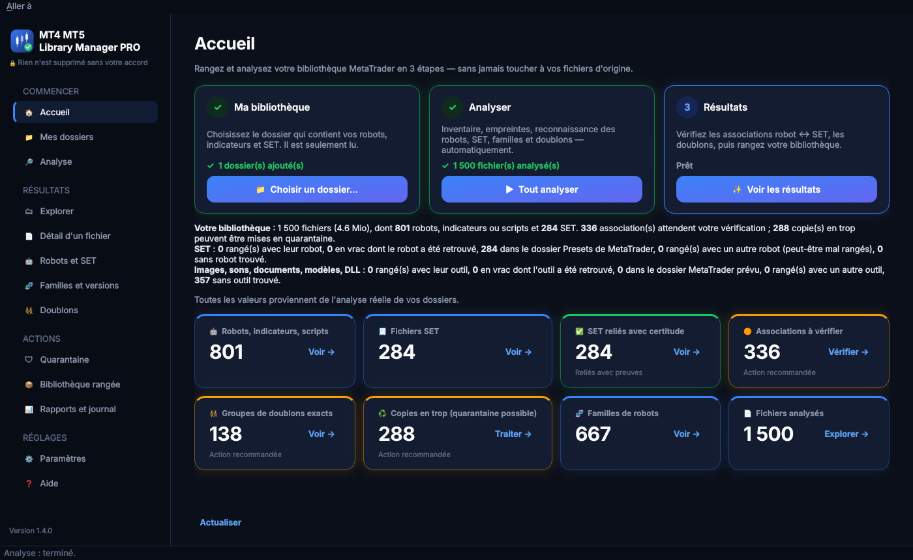

Guide d'installation sur Mac — environ 2 minutes
Ouvrez ce dossier d'installation. Il contient :
Double-cliquez sur Installer.command.
Une fenêtre de Terminal s'ouvre et fait tout toute seule : elle reconnaît votre Mac (Apple Silicon ou Intel), vérifie que le fichier est intact, installe l'application dans Applications puis l'ouvre.
Si le Mac affiche « Apple n'a pas pu vérifier… » ou « développeur non identifié » (normal la première fois : l'application n'est pas vendue sur l'App Store) :
Sur un macOS plus ancien : clic droit sur Installer.command → Ouvrir → Ouvrir.
Quand le Terminal affiche « ✅ Installation terminée », fermez sa fenêtre. C'est fini : l'application est dans Applications et dans le Launchpad.
L'écran d'accueil vous guide en 3 étapes : 1. choisir votre dossier MetaTrader, 2. lancer l'analyse, 3. voir les résultats (robots, SET, doublons…).

Menu Pomme (en haut à gauche) → À propos de ce Mac : « Puce Apple M… » = Apple-Silicon ; « Intel » = Intel.
Dans Fichiers d'installation, double-cliquez sur le fichier .dmg correspondant, puis glissez l'application sur Applications.
Ouvrez l'application depuis Applications. Si elle est bloquée : Réglages Système → Confidentialité et sécurité → Ouvrir quand même (une seule fois).
Glissez MT4 MT5 Library Manager PRO du dossier Applications vers la Corbeille.